Fifteen directions, each taking one composition idea from a recent Awwwards Site of the Day or Month and rebuilding it from Cutsway's own world, in the gold to red logo colourway. Every page has one live thing to try. All earlier prototypes
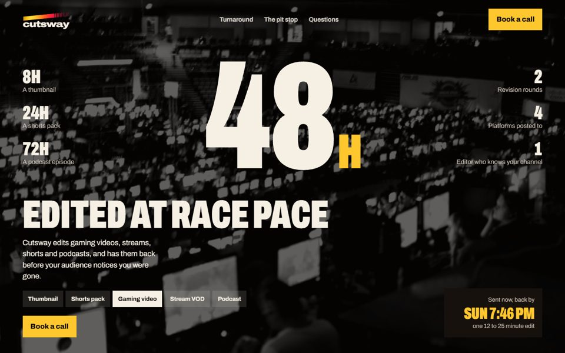
The turnaround as a race number over a black-and-white arena photo, stats down both sides.
After Nick Ho and Lando Norris (Site of the Year 2025)Live: pick a deliverable, the giant number rolls and the "back by" time updates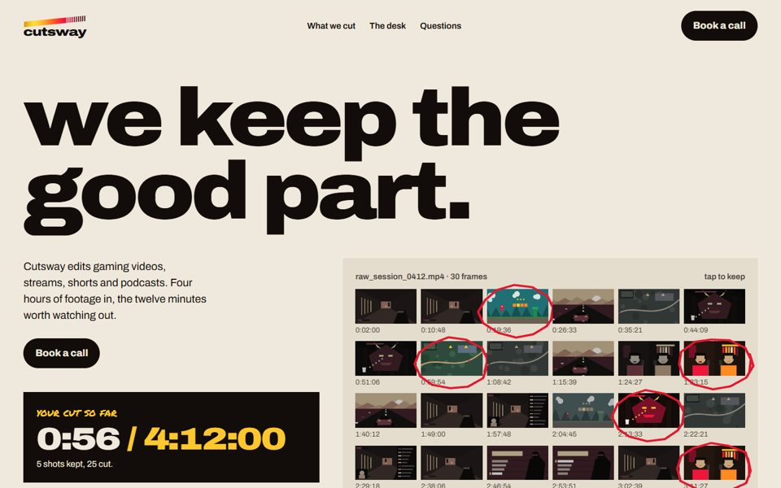
An editor's contact sheet of gameplay frames on paper, circled in red grease pencil.
After FORMAT by Obys (editorial grid)Live: circle frames to keep, the runtime adds up, "Play my cut" plays them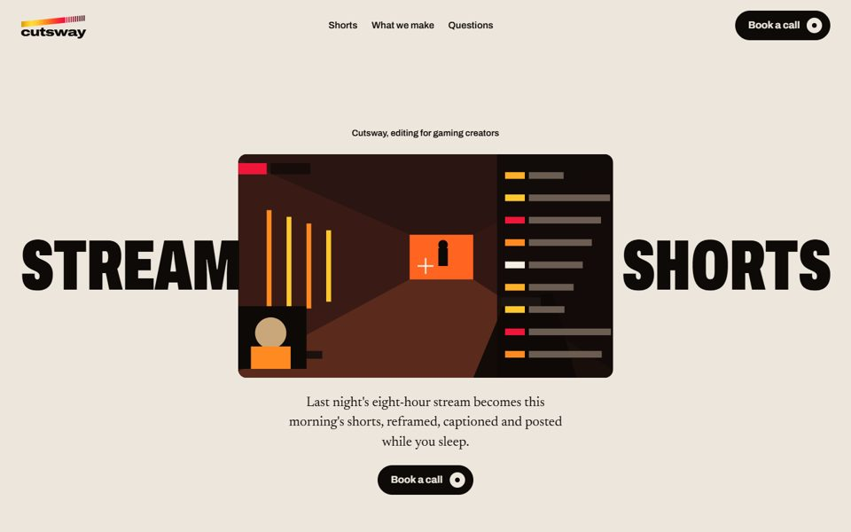
"Stream / Shorts" split around a live stream window that opens to full screen.
After Colonia Zacamil (split headline round a video)Live: scroll opens the window and a 9:16 crop reframes the stream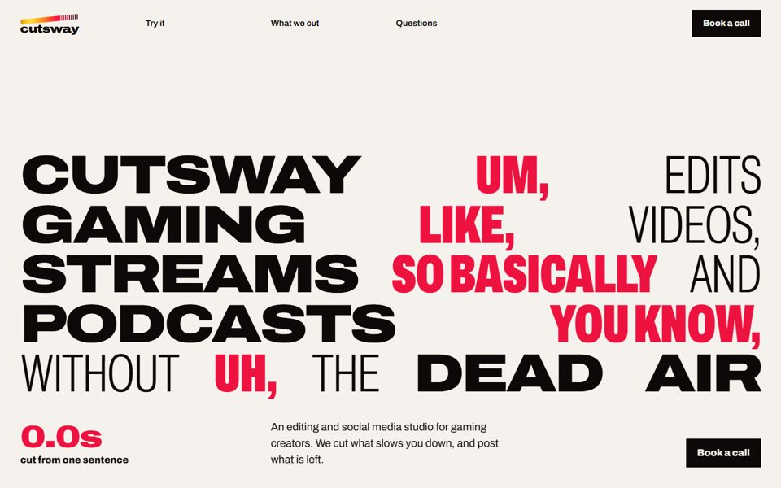
A justified type wall of mixed widths. The filler words collapse out as you scroll.
After Signal-A Studio (justified mixed-weight wall)Live: paste a transcript, the ums and likes get struck and timed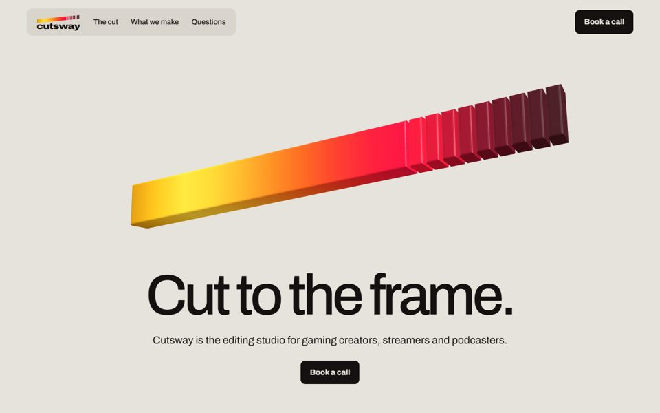
The logo bar as a real 3D object on a quiet studio ground, product-shot style.
After Butter (3D hero object)Live: drag to spin it, slide to razor the slices off and drop the runtime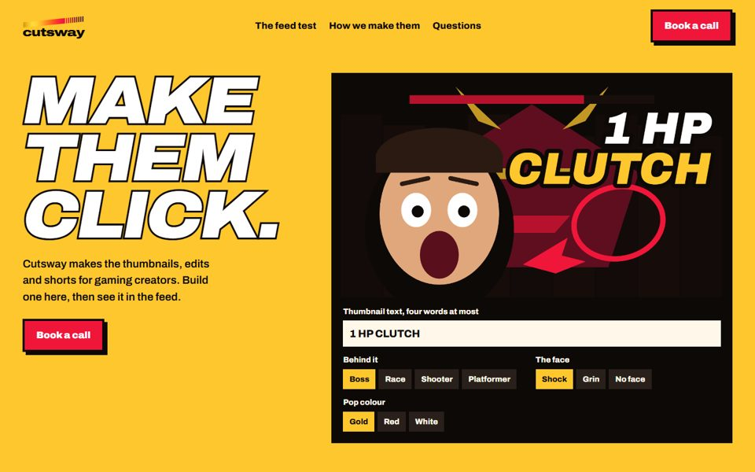
Loud on purpose: outlined italic type, hard shadows, a working thumbnail builder.
After ONE&ALL's hero type and maximalist workLive: type a title, pick a frame and a face, then see it at feed size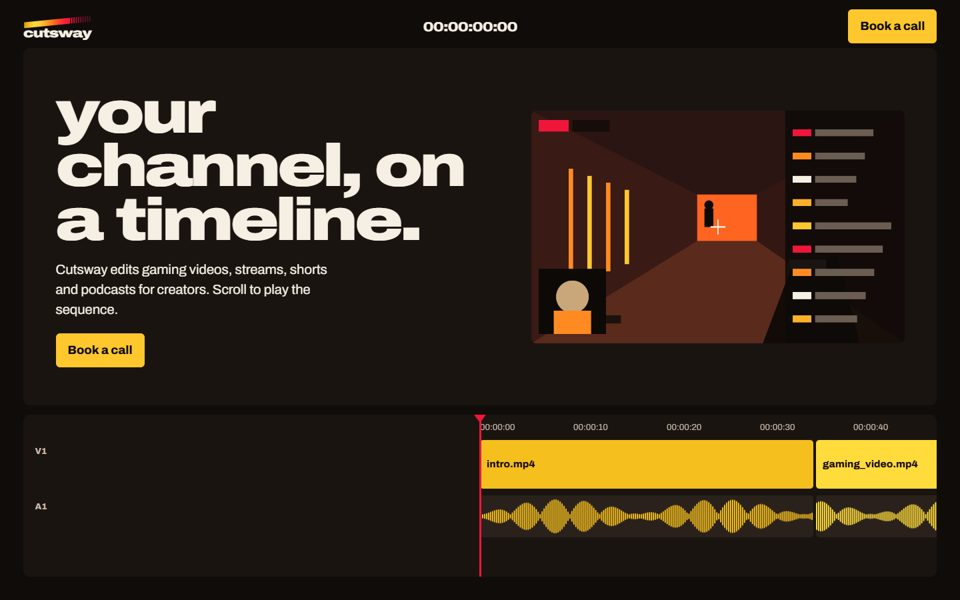
The whole site is an edit timeline; the clips are coloured along the logo bar.
After horizontal-scroll storytelling sites (Noomo, Obys experiments)Live: scroll drives the playhead and timecode; click a clip to jump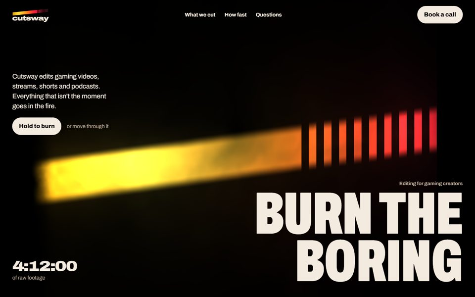
One glowing form on black: the logo bar as a living ember shader, giant word in the corner.
After Zentry (Site of the Month)Live: the cursor stirs the fire; hold the button to burn the dead air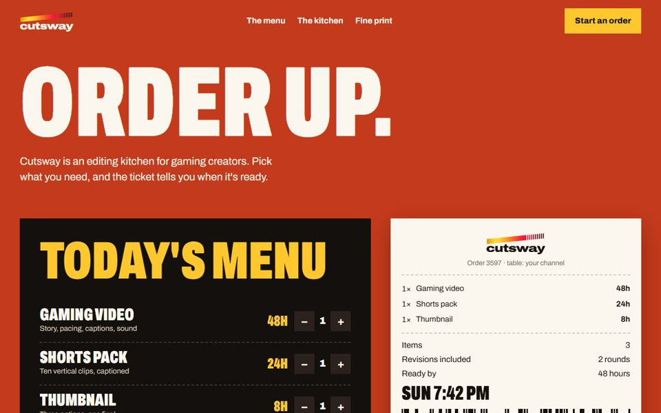
A diner menu board and a thermal receipt; Cutsway as an editing kitchen.
After artefact-led sites (the printed thing as the page)Live: build an order, the ticket prints a "ready by" time and emails it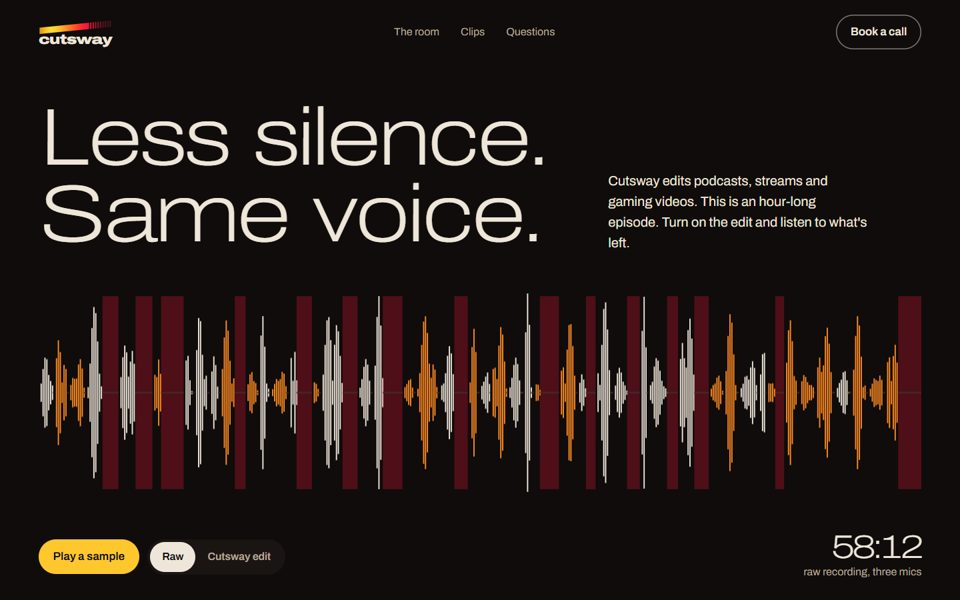
Hushed and premium: a full-width podcast waveform with the silences marked.
After Overworld AudioLive: toggle the edit and the gaps close; play a synthesised before and after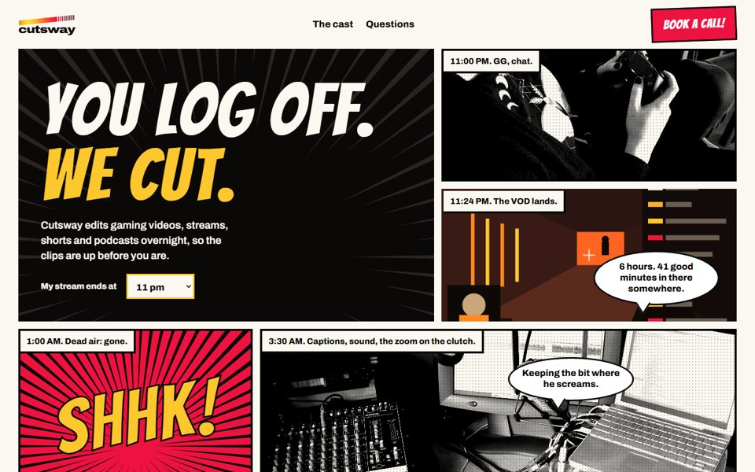
One night of a creator's stream told as a manga page, halftone photos and all.
After comic-led portfolio work in the Brutalism collectionLive: set when your stream ends and every panel's timestamp re-flows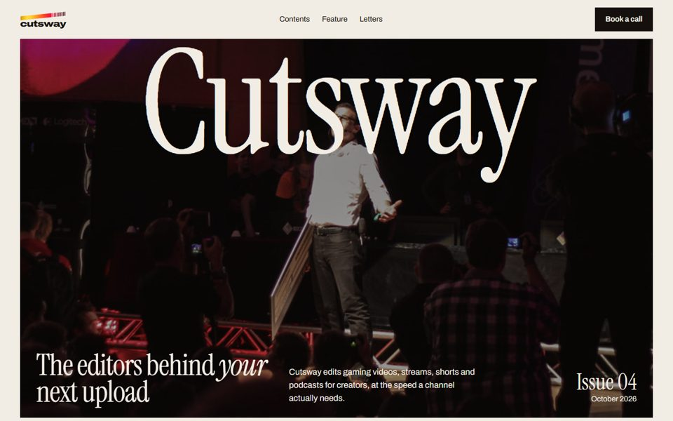
An editorial magazine: serif masthead over a full-bleed cover photo.
After Siena Film Foundation and LPASLive: enter your raw minutes, the contents page writes itself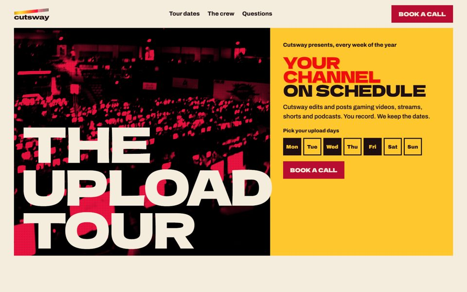
A two-colour risograph gig poster; your upload schedule as tour dates.
After No Art (festival energy)Live: toggle your upload days, the poster re-prints the dates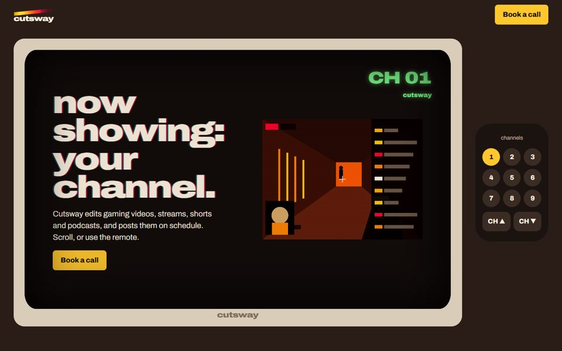
The site is a television; each service is a channel, with a remote for navigation.
After PX Push (broadcast, CRT texture)Live: scroll or the remote flips channels through static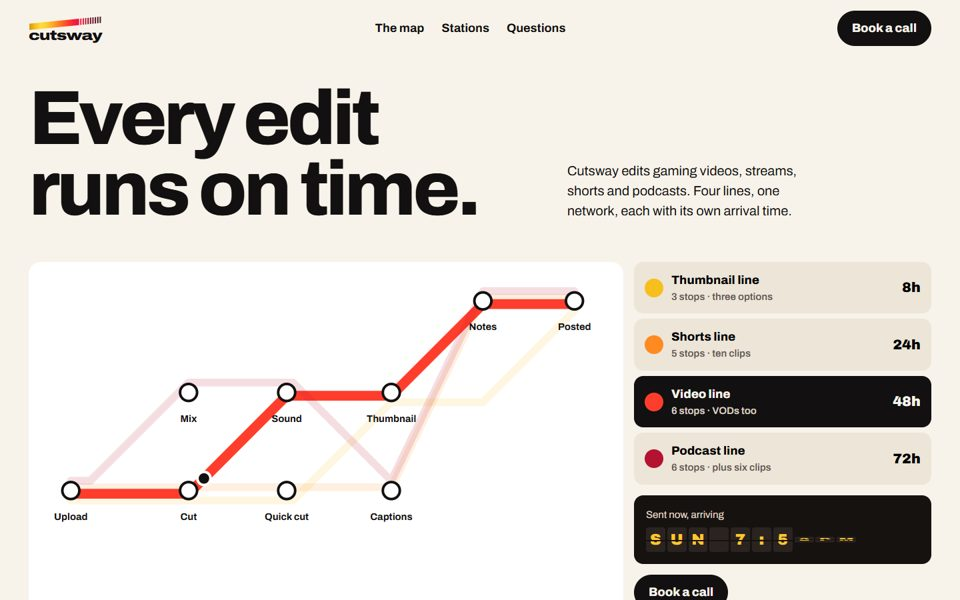
A transit map: each deliverable is a metro line through the stations of an edit.
After information-design winners (Vignelli-style diagrams)Live: pick a line, a train runs it and the split-flap board flips to its arrival05 and 08 use WebGL and work best through start-prototypes.bat (http). The rest also open straight from the folder.
Turnaround hours (8 / 24 / 48 / 72), two revision rounds, the platforms list, the email address, and every made-up feed title or story beat. None of the pictures show Cutsway's own work.